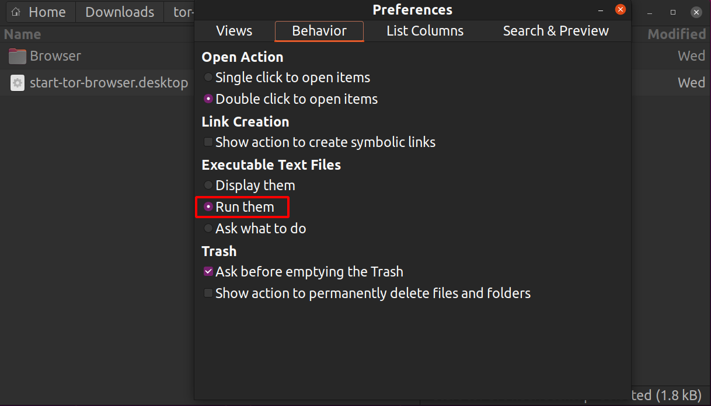

Para Windows
Ve a la página de descarga del Navegador Tor.
Descarga el archivo .exe de Windows.
(Recomendado) Verifica la firma del archivo.
Cuando se haya completado la descarga, haz doble click en el archivo .exe. Completa el proceso del asistente de instalación.
Para macOS
Ve a la página de descarga del Navegador Tor.
Descarga el archivo .dmg de macOS.
(Recomendado) Verifica la firma del archivo.
Cuando se haya completado la descarga, haz doble click en el archivo .dmg. Completa el proceso del asistente de instalación.
Para GNU/Linux
Ve a la página de descarga del Navegador Tor.
Descarga el archivo .tar.xz de GNU/Linux.
(Recomendado) Verifica la firma del archivo.
Ahora sigue el método gráfico o bien por línea de comandos:
Método gráfico
Una vez finalizada la descarga, extrae el archivo usando un gestor de archivos.
Necesitarás decirle a tu GNU/Linux que quieres tener la habilidad de ejecutar scripts de intérprete de comandos.
Navega hasta el directorio recién extraído del Navegador Tor.
Haz clic con el botón derecho en start-tor-browser.desktop, abre Propiedades o Preferencias y cambia el permiso para permitir la ejecución del archivo como programa.
Doble clic en el icono para iniciar el Navegador Tor por primera vez.

Nota: En Ubuntu y algunas otras distribuciones, si intentas lanzar start-tor-browser.desktop, es posible que se abra un archivo de texto.
Para cambiar este comportamiento y lanzar en vez al Navegador Tor, haz lo siguiente:
- Inicia "Archivos" (GNOME Files/Nautilus)
- Haz clic en Preferencias.
- Navega hasta la pestaña 'Comportamiento'.
- Selecciona "Ejecútalos" o "Preguntar qué hacer" bajo "Archivos de Texto Ejecutables".
- Si eliges este último, haz clic en "Ejecutar", después de hacer click en el archivo
start-tor-browser.desktop.

Método por línea de comandos
Cuando se haya completado la descarga, extrae el archivo con el comando tar -xf [archivo del NT].
Desde dentro del directorio del Navegador Tor, puedes lanzarlo ejecutando:
./start-tor-browser.desktop
Nota: Si este comando falla al ejecutarse, probablemente necesitas hacer al archivo ejecutable. Desde dentro de este directorio ejecuta: chmod +x start-tor-browser.desktop
Algunos modificadores adicionales que se pueden usar con start-tor-browser.desktop desde la línea de comandos:
| Modificador |
Descripción |
--register-app |
Para registrar al Navegador Tor como una aplicación de escritorio. |
--verbose |
Para mostrar las salidas de Tor y Firefox en la terminal. |
--log [archivo] |
Para registrar las salidas de Tor y Firefox en un archivo (por defecto: tor-browser.log). |
--detach |
Para desvincularse de la terminal y ejecutar el Navegador Tor en segundo plano. |
--unregister-app |
Para quitar el Navegador Tor del registro de aplicaciones de escritorio. |
Mira aquí cómo actualizar el navegador Tor.